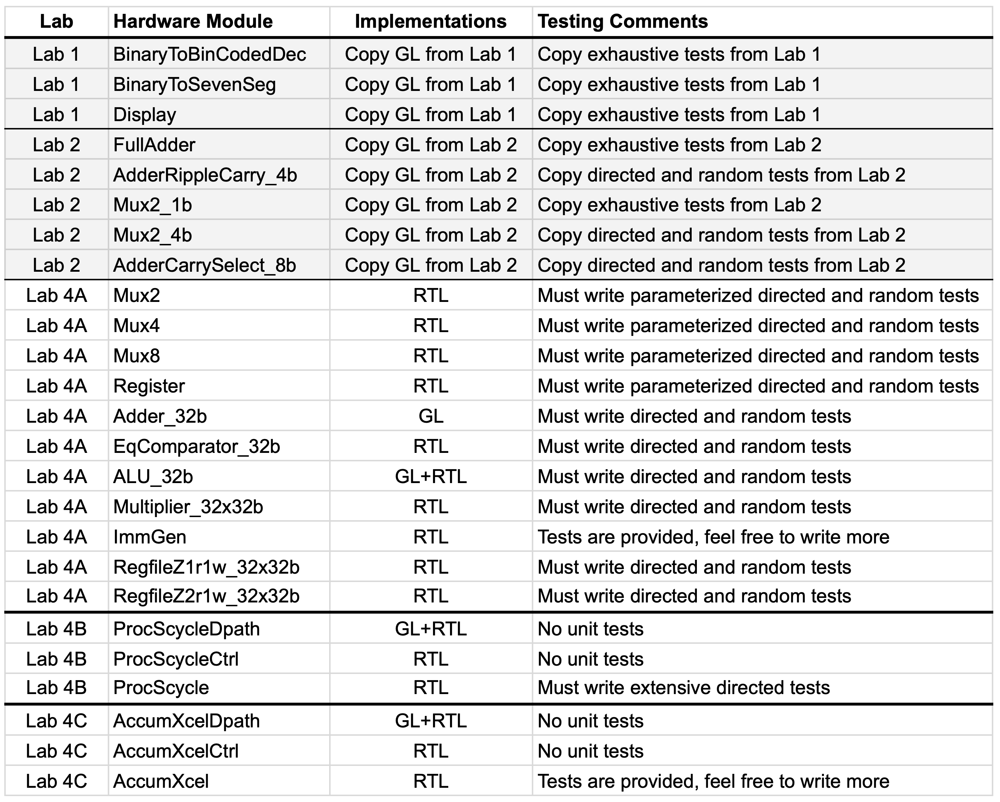
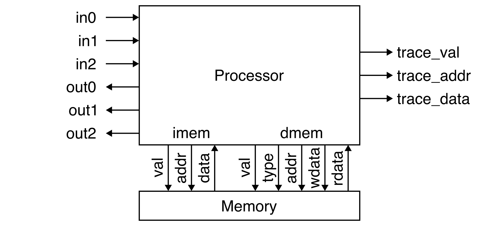
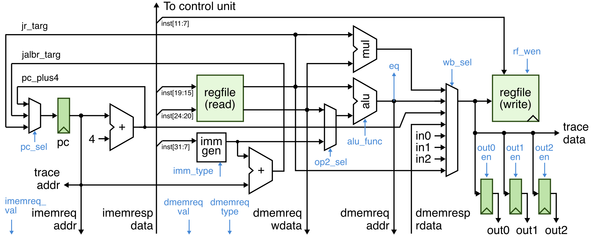
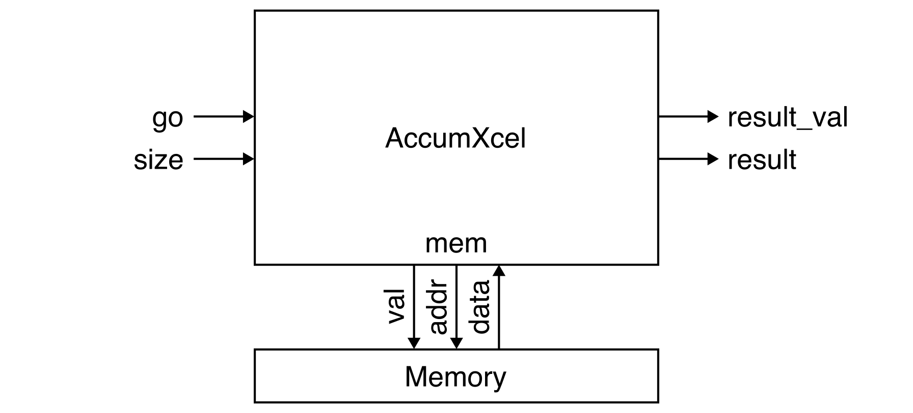
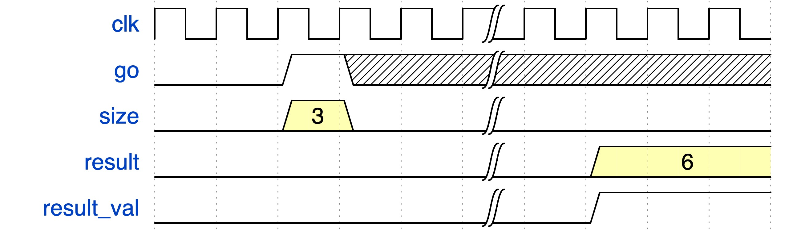
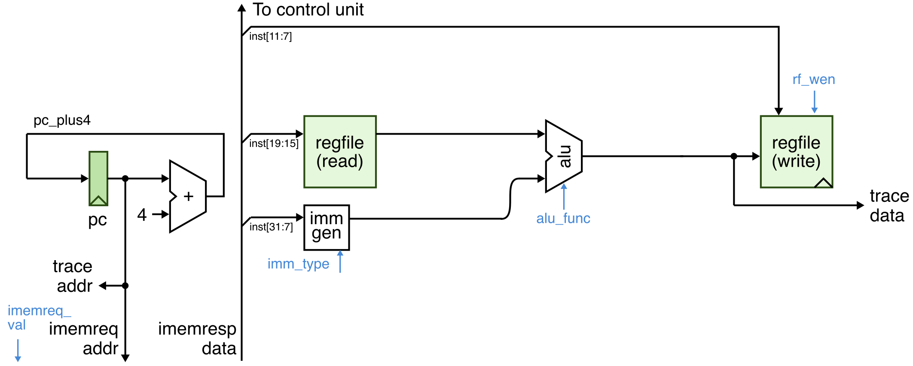

Lab 4 (Parts A, B, C): TinyRV1 Processor - Implementation and Verification
Lab 4 will give you experience designing, implementing, testing, and prototyping a single-cycle processor microarchitecture and a specialized accelerator. The processor will implement the TinyRV1 instruction set. The instruction set manual is located here:
The lab reinforces several lecture topics including instruction set architectures, single-cycle processors, and finite-state machines. The lab will continue to provide opportunities to leverage the three key abstraction principles: modularity, hierarchy, and regularity.
The lab includes six parts:
- Part A: Processor Datapath Components Implementation and Verification
- Part B: Single-Cycle TinyRV1 Processor Implementation and Verification
- Part C: Accumulator Accelerator Implementation and Verification
- Part D: Single-Cycle TinyRV1 Processor FPGA Analysis and Prototyping
- Part E: Processor vs Accelerator FPGA Analysis and Prototyping
- Part F: TinyRV1 Processor Report
Parts A, B, and C are submitted by simply pushing the appropriate code to GitHub. Part A is due on Thursday, November 7 at 11:59pm. Part B is due on Thursday, November 14 at 11:59pm. Part C is due on Tuesday, November 26th at 11:59pm.
This handout assumes that you have read and understand the course
tutorials, discussion sections, and successfully completed Labs 1-3. To
get started, use VS Code to log into an ecelinux server, source the
setup script, and clone your individual remote repository from GitHub:
% source setup-ece2300.sh
% mkdir -p ${HOME}/ece2300
% cd ${HOME}/ece2300
% git clone git@github.com:cornell-ece2300/groupXX
% cd ${HOME}/ece2300/groupXX
% tree
where XX should be replaced with your group number. You can both pull
and push to your remote repository. If you have already cloned your
remote repository, then use git pull to ensure you have any recent
updates before working on your lab assignment.
Go ahead and create a build directory in the lab4-proc directory for
this lab, and run configure to generate a Makefile.
Your repo contains the following files which are part of the automated build system:
Makefile.in: Makefile for the build systemconfigure: Configure script for the build systemconfigure.ac: Used to generate the configure scriptscripts: Scripts used by the build system
The following table shows all of the hardware modules you will be working with in Lab 4.

Before starting, you should copy over all of the listed hardware modules and the associated test benches for the seven-segment display from Lab 1 and the adders and multiplexors from Lab 2. Make sure all of these hardware modules pass all of your test cases.
Remember that GL implementations must be implemented using either explicit gate-level modeling or Boolean equations. For these designs, students are only allowed to use these Verilog constructs:
wire,assignnot,and,nand,or,nor,xor,xnor~,&,|,^1'b0,1'b1,1'd0,1'd1, and other literals{}(concatenation operator){N{}}(repeat operator)- module instantiation
Hardware modules marked in the table as GL* must only use explicit
gate-level modeling (i.e., you cannot use ~, &, |, ^).
RTL implementations can use all of the GL constructs in addition to the following Verilog constructs.
logic+,-,*>>,<<,>>>==,!=,<,>,<=,>=&&,||,!&,~&,|,~|,^,^~(reduction operators)?:(ternary operator)always_comb,always_ff @(posedge clk)if,else if,endifcase,default,endcase
Note that some hardware modules have more specific restrictions; see the source comments for more details. Using unallowed Verilog constructs will result in significant penalties for code functionality and code quality. If you have any questions on what Verilog constructs can and cannot be used, please ask an instructor. There are no restrictions on Verilog constructs in test benches.
It is critical for students to work together to complete the lab assignment. It is unlikely one student can complete the entire lab on their own. A very productive approach is to have one student work on the design of a few hardware modules while the other student works on the test benches for those same hardware modules. Then work together to test and debug these modules. Then switch roles and move on the next few modules.
1. Interface and Implementation Specification
This section describe the required interface (i.e., the ports for the module and the module's functional behavior) before describing the required implementation (i.e., what goes inside the module) for each hardware module.
1.1. Processor Datapath Components
You will need to implement multiplexors, registers, four arithmetic units, immediate generation unit, and two register files.
Parameterized Multiplexors and Registers
Implement 2-to-1, 4-to-1, and 8-to-1 multiplexors using RTL modeling. Each multiplexor should be parameterized by the bitwidth of the corresponding input and output ports.
Implement a multi-bit register which supports reset and enable using RTL modeling. The register should be parameterized by the bitwidth of the corresponding input and output ports.
Arithmetic Units
Implement four arithmetic units.
-
Implement a 32-bit adder by instantiating four 8-bit carry select adders from Lab 2. The 32-bit adder will be the only module implemented at the gate-level in your final processor implementation.
-
Implement a 32-bit equality comparator using RTL modeling.
-
Compose the adder, the equality comparator, and a 2-to-1 multiplexor to create a simple ALU. The ALU takes as
opinput port which specifies whether the ALU should do an add (opis zero) or an equality comparison (opis one). -
Implement a 32-bit by 32-bit multiplier using RTL modeling.
** Immediate Generation Unit**
Implement an immediate generation unit suitable for use in generating
immediates from TinyRV1 instructions. The immediate generation unit
uses the following encoding for the imm_type input:
imm_type == 0: I-type (ADDI)imm_type == 1: S-type (SW)imm_type == 2: J-type (JAL)imm_type == 3: B-type (BNE)
See the TinyRV1 ISA manual for more details.
Register Files
Implement two different register files. Both register files have 32 32-bit registers. For both register files, reading register 0 should always return the value zero. For both register files, writing and reading the same register results in reading the old value. The key difference is one register file provides one read port and one write port, while the other register file provides two read ports and one write port.
1.2. TinyRV1 Processor Interface
The single-cycle TinyRV1 processor has the following interface:
module Proc
(
(* keep=1 *) input logic clk,
(* keep=1 *) input logic rst,
// Memory Interface
(* keep=1 *) output logic imemreq_val,
(* keep=1 *) output logic [31:0] imemreq_addr,
(* keep=1 *) input logic [31:0] imemresp_data,
(* keep=1 *) output logic dmemreq_val,
(* keep=1 *) output logic dmemreq_type,
(* keep=1 *) output logic [31:0] dmemreq_addr,
(* keep=1 *) output logic [31:0] dmemreq_wdata,
(* keep=1 *) input logic [31:0] dmemresp_rdata,
// I/O Interface
(* keep=1 *) input logic [31:0] in0,
(* keep=1 *) input logic [31:0] in1,
(* keep=1 *) input logic [31:0] in2,
(* keep=1 *) output logic [31:0] out0,
(* keep=1 *) output logic [31:0] out1,
(* keep=1 *) output logic [31:0] out2,
// Trace Interface
(* keep=1 *) output logic trace_val,
(* keep=1 *) output logic [31:0] trace_addr,
(* keep=1 *) output logic [31:0] trace_data
);

Memory Interface
The memory interface includes two parts. The instruction memory
interface is used to read instructions similar to how we read notes in
Lab 3. To read an instruction set the imemreq_val output port high and
the imemreq_addr output port to the desired instruction address; the
instruction will be returned via the imemresp_data input port
combinationally (i.e., in the same cycle). The data memory interface
enables load and store instructions to read and write memory. It is
similar to the instruction memory interface except now we have an
additional dmemreq_type output port which specifies whether we want to
read memory (i.e., dmemreq_type is zero) or write memory (i.e.,
dmemreq_type is one). We also need the dmemreq_wdata output port for
the write data.
I/O Interface
The input/output (I/O) interface enables the processor to send and receive data from the system. We will eventually be connecting the I/O ports to the switches, push buttons, LEDs, and seven-segment displays. We can read the input I/O ports using CSRR instructions and we can write the output I/O ports using CSRW instructions. See the TinyRV1 ISA manual for more information.
Trace Interface
The trace interface is used for verification and should produce a "trace"
of all instructions executed by the processor. Whenever the processor
executes an instruction it should set the trace_val output high and
also set the trace_addr output port to the address of the executed
instruction and the trace_data output port to be the data written to
the register file by that instruction. If the instruction does not write
the register file then the trace_data output is undefined.
1.2. TinyRV1 Single-Cycle Processor Implementation
The TinyRV1 single-cycle processor implementation will be decomposed into a datapath and a control unit. The datapath must be implemented structurally without any always blocks or non-trivial logic. The control unit will be implemented using flat RTL via a single always block.
The following diagram illustrates the complete TinyRV1 single-cycle processor datapath. Note that this diagram is slightly different from lecture, since in lab we need to implement the CSRR/CSRW instructions, the I/O interface, and the trace interface. Again, the datapath should be implemented structurally by instantiating and connecting the processor datapath components developed in Part A.

The blue arrows are control/status signals between the control unit and the datapath. Control signals go from the control unit to the datapath while status signals go from the datapath to the control unit. Here is a list of all of the control signals you will need for your single-cycle processor implementation (all signals are one bit unless otherwise specified):
c2d_pc_sel(2 bits)c2d_imm_type(2 bits)c2d_op2_selc2d_alu_funcc2d_wb_sel(3 bits)c2d_rf_wenc2d_imemreq_valc2d_dmemreq_valc2d_dmemreq_typec2d_out0_enc2d_out1_enc2d_out2_en
There is one status signal for the single-cycle processor implementation which indicates the branch outcome:
d2c_eq
The control unit essentially needs to implement a control signal table just like in lecture. We will use the following stylized approach to implement this control signal table:
always_comb begin
if ( rst )
cs( '0, '0, '0, '0, '0, '0, '0, '0, '0 );
else begin
casez ( d2c_inst )
// pc imm op2 alu wb rf imem dmem dmem
// sel type sel func sel wen val val type
`TINYRV1_INST_ADDI: cs( 'x, imm_i, 'x, add, 'x, 1, 1, 0, 'x );
default: cs( 'x, 'x, 'x, 'x, 'x, 'x, 1, 'x, 'x );
endcase
end
end
There should be one row per instruction and one column for each control
signal. You should declare appropriate localparams (e.g., imm_i,
add) to make the control signal table more readable.
The single-cycle processor should be able to fetch a new instruction from memory, decode this instruction, read the register file, perform arithmetic, access memory, and write the result to the register file all in a single cycle.
1.3. Accumulator Accelerator
Your TinyRV1 single-cycle processor is programmable meaning it can perform different functionality simply by executing different assembly level programs. We will also be implementing a specialized accelerator which can only perform a single function. We will then do a comparative analysis to understand the performance and area of both our general-purpose programmable processor and a specialized accelerator.
Our accelerator will perform an accumulation function. It will accumulate 32-bit integer values stored in an array in memory to produce a single sum. You should assume the array starts at memory address 0x00000. The interface for our accelerator is shown below.
module AccumXcel
(
(* keep=1 *) input logic clk,
(* keep=1 *) input logic rst,
(* keep=1 *) input logic go,
(* keep=1 *) input logic [13:0] size,
(* keep=1 *) output logic result_val,
(* keep=1 *) output logic [31:0] result,
(* keep=1 *) output logic memreq_val,
(* keep=1 *) output logic [15:0] memreq_addr,
(* keep=1 *) input logic [31:0] memresp_data
);

The memory interface is very similar to the processor memory interface
except our accumulator accelerator will only use a 16-bit address. The
accelerator will assume the array starts at address zero in the memory.
The accelarator also includes a size input port which is used to
specify the number of elements stored in the array; note that the size is
specified in elements not bytes. So if the size is 4 then the
accumulator should read the values stored at memory addresses 0x000,
0x004, 0x008, and 0x00c. The accelerator should wait until the go input
port is high; the accelerator should then start its computation. When the
accelerator has finished it should set the result output to the final
sum and the result_val output high. Your accelerator does not need to
be able to support multiple transactions. The accelerator will perform a
single accumulation and then stop. We will need to reset the accelerator
if we with to perform another accumulation. The waveform below shows an
example transaction, assuming that the values at addresses 0x000, 0x004,
and 0x008 sum to 6:

You must implement your accelerator using a datapath
(hw/AccumXcelDpath.v) and a control unit (hw/AccumXcelCtrl.v). We
have very specific requirements on what kind of hardware modeling is
permitted in these two files.
-
Datapath Rules: The datapath must be completely structural RTL. You can use any of the components developed in Part A. You should only instantiate and connect RTL modules that you have implemented and tested separately. The only exception is if you need to use an adder you should use the Adder_32b_GL module. This means you cannot directly use any logic in this module; no always blocks and nothing in an assign statement other than basic connectivity.
-
Control Unit Rules: The control unit must include just a finite-state machine. It must have three parts: the state register which should be implemented using a
Register_RTL, analways_combblock to implement the combinational state transition logic, and analways_combblock to implement the combinational output logic. There should be no other logic in the control unit. Noalways_ff1 blocks (explicitly instantiateRegister_RTLfor the state register), no otheralways_combblocks, and nothing in anassign` statement other than basic connectivity.
You are free to structure your datapath however you like, and you are
free to use any kind of finite-state-machine for the control unit; but
you must follow the above rules. The provided hw/AccumXcel.v file
composes the datapath and control units. You will need to modify this
file to add new control and/or status signals.
2. Testing Strategy
You will need to use a variety of different testing strategies to ensure your TinyRV1 processor is full functional.
2.1. Testing the Processor Datapath Components
It is critical we take a test-driven approach. You must thoroughly verify each processor datapath component using exhaustive, directed, and/or random testing as appropriate. You can use a very similar approach as in the previous labs. Do not under any circumstances start implementing your processor until you are absolutely positive all of your processor datapath components are fully functional.
2.2. Testing the Processor
Testing the processor is more complex than testing individual hardware blocks. We have provided you some testing infrastructure to simplify the process, but students should still expect to dedicated significant time to verifying their processor correctly implements the TinyRV1 ISA.
We have provided you a functional-level FL processor model (also called
an instruction set simulator) located in test/ProcFL.v. The FL
processor model executes the instruction semantics behaviorally using
high-level Verilog. It is not meant to model hardware. The FL processor
model can be used to make sure your tests are correct before you run
those tests on your single-cycle processor.
The test cases for the processor is located in these test files:
test/Proc-addi-test-cases.vtest/Proc-add-test-cases.vtest/Proc-mul-test-cases.vtest/Proc-lw-test-cases.vtest/Proc-sw-test-cases.vtest/Proc-jal-test-cases.vtest/Proc-jr-test-cases.vtest/Proc-bne-test-cases.vtest/Proc-csr-test-cases.v
Each file should only test a single instruction. Processor test cases look like this:
task test_case_1_basic();
t.test_case_begin( "test_case_1_basic" );
// Write assembly program into memory
asm( 'h000, "addi x1, x0, 2" );
asm( 'h004, "addi x2, x1, 2" );
// Check each executed instruction
check_trace( 'h000, 'h0000_0002 ); // addi x1, x0, 2
check_trace( 'h004, 'h0000_0004 ); // addi x2, x1, 2
endtask
Every processor test case includes two parts.
-
asmtasks are used to write instructions into the memory. Theasmtask takes two arguments: the address for the instruction and an assembly instruction represented as a string. Theasmtask will take care of converting the assembly instruction into a machine instruction. Theasmtasks represent the static instruction sequence (i.e., what instructions are stored in memory before the processor starts executing). -
check_tracetasks are like thechecktasks you have seen elsewhere, butcheck_tracetasks will wait for thetrace_valsignal to be high before checking to see if thetrace_addrandtrace_dataoutputs from the processor match the desired values. Thecheck_tracetasks are used to check the dynamic instruction sequence (i.e., what instructions the processor actually executes at runtime).
The above basic test case for the ADDI instruction uses the trace to make sure the first ADDI instruction writes the value 2 to the register file and the second ADDI instruction writes the value 4 to the register file. When writing register X0, the trace data is undefined. We do not want to enforce that the register write data is zero when writing X0 since this would require special hardware to handle this case. Here is how you might test reading and writing register X0.
task test_case_2_regX0();
t.test_case_begin( "test_case_2_regX0" );
// Write assembly program into memory
asm( 'h000, "addi x1, x0, 0" );
asm( 'h004, "addi x0, x1, 0" );
// Check each executed instruction
check_trace( 'h000, 'h0000_0000 ); // addi x1, x0, 0
check_trace( 'h004, 'x ); // addi x0, x1, 0
endtask
Processor test cases for memory can include an additional part:
task test_case_1_basic();
t.test_case_begin( "test_case_1_basic" );
// Write assembly program into memory
asm( 'h000, "addi x1, x0, 0x100" );
asm( 'h004, "lw x2, 0(x1)" );
// Write data into memory
data( 'h100, 32'hdead_beef );
// Check each executed instruction
check_trace( 'h000, 'h0000_0100 ); // addi x1, x0, 0x100
check_trace( 'h004, 'hdead_beef ); // lw x2, 0(x1)
endtask
In addition to the asm tasks and check_trace tasks, we can also use a
data task to write data into the memory. The above basic test case for
the LW instruction first uses an ADDI instruction to get the memory
address 0x100 into register x1. The test case then performs a LW
instruction to load the data from address 0x100 into register x2. The
check_trace tasks verify that the ADDI instruction correctly writes the
address to the register file, and that the LW instruction correctly loads
the value 0xdeadbeef from memory address 0x100.
The check_trace tasks become particularly important when testing
control flow instructions. The following test case is for the JAL
instruction:
task test_case_1_basic();
t.test_case_begin( "test_case_1_basic" );
// Write assembly program into memory
asm( 'h000, "addi x1, x0, 1" );
asm( 'h004, "jal x2, 0x00c" );
asm( 'h008, "addi x1, x0, 2" );
asm( 'h00c, "addi x1, x0, 3" );
// Check each executed instruction
check_trace( 'h000, 'h0000_0001 ); // addi x1, x0, 1
check_trace( 'h004, 'h0000_0008 ); // jal x2, 0x00c
check_trace( 'h00c, 'h0000_0003 ); // addi x1, x0, 3
endtask
Here we can see the static instruction sequence includes four instructions, but the dynamic instruction sequence only includes three instructions because the JAL instruction jumps over the instruction at address 0x008. Note that in the assembly format used for testing our processor, the literal in a JAL and BNE instruction is the absolute address of the target not the actual immediate. The assembler will take care of creating the appropriate PC relative immediate.
You can run the test cases for the ADDI instruction on the FL processor model like this:
You can run those same test cases for the ADDI instruction on the single-cycle processor like this:
You will need to add more tests cases to the appropriate -test-cases.v
file, and also add corresponding calls to these test cases in the
ProcFL-*-test.v and ProcScycle-*-test.v. Do not simple have a single
directed test case (i.e., a single task); you must have many directed
test cases (i.e., many tasks). Each directed test case should focus on
testing a different aspect of the corresponding instruction. Remember
to always make sure your tests pass on the FL processor model before
attempting to run those tests on your single-cycle processor model!
2.3. Testing the Accelerator
We provide you some simple tests for your accumulator accelerator. You can run those tests like this:
While not required, feel free to write more tests if you like.
3. Getting Started
We cannot stress enough how important it is to take an incremental approach on this lab!
3.1. Getting Started on the Processor
Do not implement the entire datapath, then implement the entire control unit, and then try to run your first test! You must take an incremental approach. Start by implementing just what you need in the datapath to execute an ADDI instruction, then add the corresponding row to the control signal table in the control unit. Then add many directed test cases to ensure your ADDI instruction is executing correctly. Then move on to the next instruction. We recommend you implement and test the instructions in this order:
- ADDI
- ADD
- MUL
- LW
- SW
- JAL
- JR
- BNE
- CSRR/CSRW
To get you started we have provided you a functional datapath (see below) and control unit capable of executing ADDI instructions. Your first task should be to add many more directed tests for the ADDI instruction. Remember to make sure these tests pass on the FL processor model! Once your design is passing these tests and you are confident your design is functional then you can move on and add just what you need in the datapath to executed ADD instructions. Then add the corresponding row to the control signal table in the control unit.

3.2. Getting Started on the Accelerator
Do not implement the entire datapath, then implement the entire control unit, and then try to run your first test! You must take an incremental approach. We provide you a simple basic test case which can help. You can run this basic test case and look at the waveforms like this:
This test case does not actually check anything. It just sets size to
4, sets go to 1, and then waits 6 cycles. It is useful because you can
look at the waveforms to see if your design is performing as expected as
you use an incremental design approach. We recommend you develop your
accelerator using the following three steps (this is exactly what the
course staff did!):
-
Step 1: Fetch: Implement a datapath and FSM that just fetches data from memory and never stops. Run this basic test case, dump the waveforms, then look at the waveforms in Surfer. See if your accelerator is correctly fetching each element from memory.
-
Step 2: Fetch and Stop: Augment your datapath and FSM so that it fetches data from memory and stop once it fetches
sizeelements. Run this basic test case, dump the waveforms, then look at the waveforms in Surfer. See if your accelerator is correctly fetching each element from memory and also stops after fetching four elements. -
Step 2: Fetch, Accumulate, and Stop: Now that you know your accelerator can fetch data correctly, augment your datapath and FSM so that it fetches data from memory, does the accumulation, and stops once it fetches
sizeelements. Run this basic test case, dump the waveforms, then look at the waveforms in Surfer. See if your accelerator is correctly fetching each element from memory, accumulating the values, stops after fetching four elements, and outputs the correct sum.
Once you have completed all three steps then you can try the rest of the test cases.